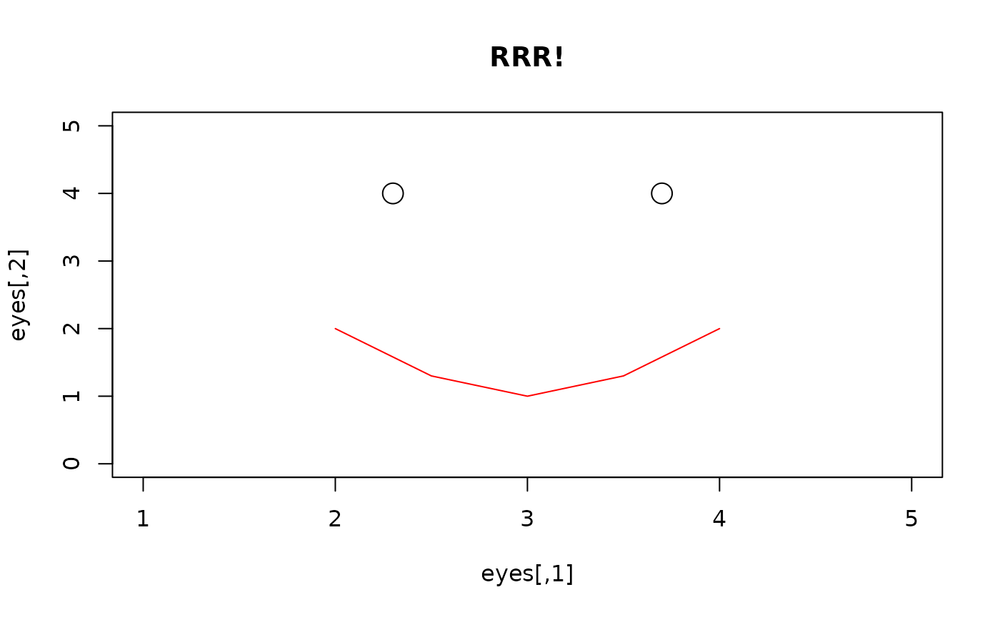
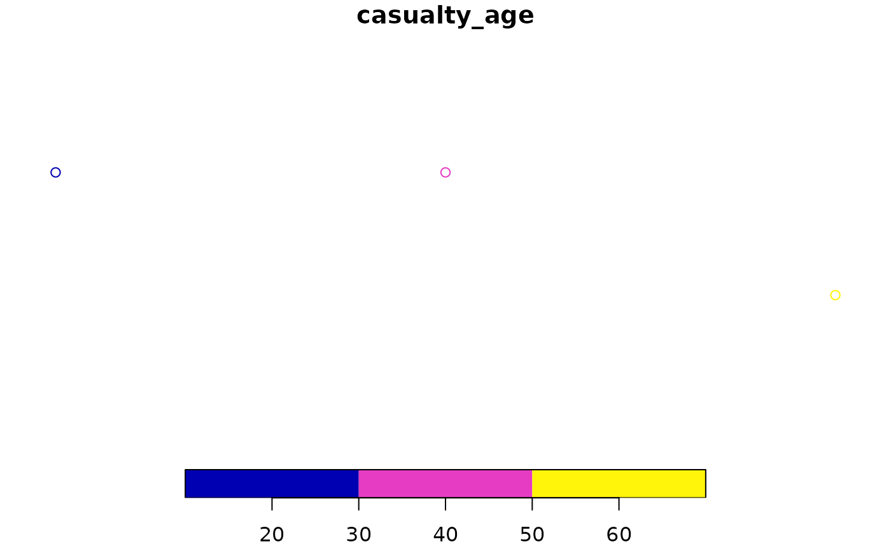
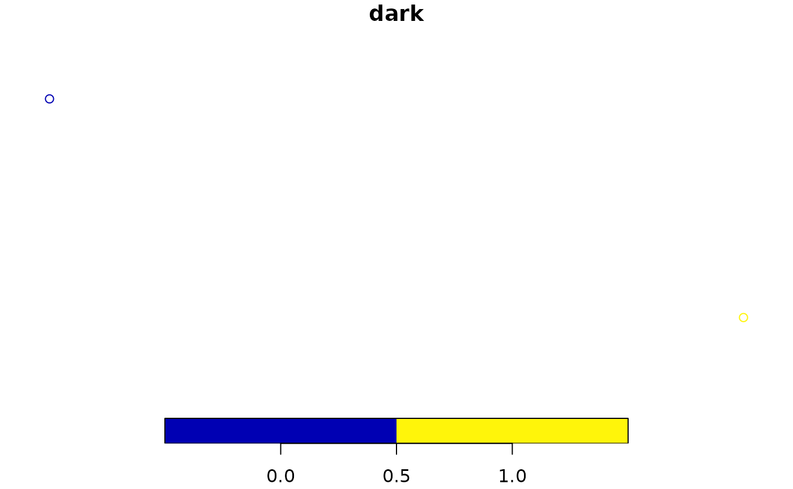

Introduction to R for road safety: an introduction to R and practical exercises
Practical exercises based on UK data from the stats19 package, developed by the Institute for Transport Studies, University of Leeds
Robin Lovelace, Malcolm Morgan & Andrea Gilardi
Source:vignettes/stats19-training.Rmd
stats19-training.RmdNote
This introductory practical vignette has largely been replaced by the workbook “Reproducible Road Safety Research with R”, which can be found at https://itsleeds.github.io/rrsrr/ and as a PDF at racfoundation.org (Lovelace 2020). That workbook is more comprehensive than the content in this tutorial and is the recommended place to learn about using R for reproducible road safety research.
Introduction
This document provides information, code and exercises to test and improve your R skills with an emphasis on road safety research. It was initially developed to support a 2 day course. The course is based on open road crash records from the stats19 package (Lovelace et al. 2019). However, the content should be of use for anyone working with road crash data that has (at a minimum):
- A timestamp
- A location (or address that can be geocoded)
- Attribute data, such as severity of crash, mode of vehicles involved etc.
You should type, run and ensure you understand each line of code in this document.
Code and data supporting the content can be found in the package’s GitHub repo at github.com/ropensci/stats19. The ‘issue tracker’ associated with that repo is a good place to ask questions about the course.
Prerequisites
If you are not experienced with R, it is strongly advised that you read-up on and more importantly test out R and RStudio before attempting analyse road crash data with R. See the stats19-training-setup vignette at https://docs.ropensci.org/stats19/articles/stats19-training-setup.html for guidance on getting started with R, RStudio and installing R packages.
The completing the course requires that the following packages, which can be installed with install.packages(), can be loaded as follows:
library(pct) # access travel data from DfT-funded PCT project
library(sf) # spatial vector data classes
library(stats19) # get stats19 data
library(stplanr) # transport planning tools
library(tidyverse)# packages for 'data science'
library(tmap) # interactive mapsYou should type, run and ensure you understand each line of code in this document.
R and RStudio
The learning outcomes of this first session are to learn: RStudio main features and scripts, R objects and functions, subsetting, basic plotting, and getting help.
The first exercise is to open up RStudio and take a look around and identify the main components, shown in the figure below. Explore each of the main components of RStudio. Try changing the Global Settings (in the Tools menu) and see RStudio’s short cuts by pressing Alt-Shift-K (or Option+Shift+K on Mac).

Projects and scripts
Projects are a way to organise related work together. Each project has its own folder and Rproj file. Advice: always working from projects will make your life easier! Start a new project with:
File > New Project You can choose to create a new directory (folder) or associate a project with an existing directory. Make a new project called stats1-course and save it in a sensible place on your computer. Notice that stats1-course now appears in the top right of RStudio.
Scripts are the files where R code is stored. Keeping your code in sensibly named, well organised and reproducible scripts will make your life easier: you could simply type all our code into the console, but that require retyping commands each time you run it. Instead, code that you want to keep and share should be saved script files, plain text files that have the .R extension.
Make a new script with Flie > New File > Rscript or Ctrl+Shift+N
Save the script and give it a sensible name like stats19-lesson-1.R with File > Save, the save button on the toolbar, or Ctrl+S.
Pro tip: You can also create new R scripts by typing and running this command in the R console:
file.edit("stats19-lesson-1.R")Keeping scripts and other files associated with a project in a single folder per project (in an RStudio project) will help you find things you need and develop an efficient workflow.
Writing and running code
Let’s start with some basic R operations. Write this code into your new stats19-lesson-1.R R script and execute the result line-by-line by pressing Ctrl+Enter
This code creates two objects, both are vectors of 5 elements, and then plots them (bonus: check their length using the length() function). Save the script by pressing Ctrl+S.
There are several ways to run code within a script and it is worth becoming familiar with each. Try running the code you saved in the previous section using each of these methods:
- Place the cursor in different places on each line of code and press
Ctrl+Enterto run that line of code. - Highlight a block of code or part of a line of code and press
Ctrl+Enterto run the highlighted code. - Press
Ctrl+Shift+Enterto run all the code in a script. - Press the Run button on the toolbar to run all the code in a script.
- Use the function
source()to run all the code in a script e.g.source("stats19-lesson-1.R")
Pro tip: Try jumping between the console and the source editor by pressing Ctl+1 and Ctl+2.
Viewing Objects
Create new objects by typing and running the following code chunk in a new script, e.g. called objects.R.
vehicle_type = c("car", "bus", "tank")
casualty_type = c("pedestrian", "cyclist", "cat")
casualty_age = seq(from = 20, to = 60, by = 20)
set.seed(1)
dark = sample(x = c(TRUE, FALSE), size = 3, replace = TRUE)
small_matrix = matrix(1:24, nrow = 12)
crashes = data.frame(vehicle_type, casualty_type, casualty_age, dark)We can view the objects in a range of ways:
- Type the name of the object into the console, e.g.
crashesandsmall_matrix, and run that code. Scroll up to see the numbers that didn’t fit on the screen. - Use the
head()function to view just the first 6 rows e.g.head(small_matrix) - Bonus: use the
nargument in the previous function call to show only the first 2 rows ofsmall_matrix - Click on the
crashesobject in the environment tab to View it in a spreadsheet. - Run the command
View(vehicle_type). What just happened?
We can also get an overview of an object using a range of functions, including summary(), class(), typeof(), dim(), and length().
You can, for example, view a summary of the casualty_age variable by running the following line of code:
summary(casualty_age)
#> Min. 1st Qu. Median Mean 3rd Qu. Max.
#> 20 30 40 40 50 60Exercise try these functions on each of the objects, what results do they give?
Bonus: Find out the class of the column vehicle_type in the data frame crashes with the command class(crashes$vehicle_type). Why has it changed? Create a new object called crashes_char that keeps the class of the character vectors intact by using the function tibble::tibble() (see tibble.tidyverse.org and Section 4 for details).
Autocompletion
RStudio can help you write code by autocompleting it. RStudio will look for similar objects and functions after typing the first three letters of a name.

When there is more than one option you can select from the list using the mouse or arrow keys. Within a function, you can get a list of arguments by pressing Tab.

Getting help
Every function in R has a help page. You can view the help using ? for example ?sum. Many packages also contain vignettes, these are long form help documents containing examples and guides. vignette() will show a list of all the vignettes available, or you can show a specific vignette for example vignette(topic = "sf1", package = "sf").
Commenting Code
It is good practice to use comments in your code to explain what it does. You can comment code using #
For example:
# Create vector objects (a whole line comment)
x = 1:5 # a seqence of consecutive integers (inline comment)
y = c(0, 1, 3, 9, 18.1) You can comment/uncomment a whole block of text by selecting it and using Ctrl+Shift+C.
Pro tip: You can add a comment section using Ctrl + Shift + R
The global environment
The Environment tab shows all the objects in your environment, this includes datasets, parameters, and any functions you have created. By default, new objects appear in the Global Environment but you can see other environments with the drop-down menu. For example, each package has its own environment.
Sometimes you wish to remove things from your environment, perhaps because you no longer need them or things are getting cluttered.
You can remove an object with the rm() function e.g. rm(x) or rm(x, y) or you can clear your whole environment with the broom button on the Environment Tab.
- Remove the object
xthat was created in a previous section. - What happens when you try to print the
xby entering it into the console? - Try running the following commands in order:
save.image(); rm(list = ls()); load(".RData"). What happened? - How big (how many bytes) is the
.RDatafile in your project’s folder? - Tidy up by removing the
.Rdatafile withfile.remove(".Rdata").
Debugging Code
All the code shown so far is reproducible. To test RStudio’s debugging features, let’s write some code that fails, as illustrated in the figure below.

- What is the problem with the code shown in the figure?
- Create other types of error in the code you have run (e.g. no symetrical brackets and other typos)
- Does RStudio pick up on the errors? And what happens when you try to run buggy code?
Always address debugging prompts to ensure your code is reproducible
Saving R objects
We have already seen that you can save R scripts. You can also save individual R objects in the RDS format.
saveRDS(crashes, "crashes.Rds")We can also read back in our data.
R also supports many other formats, including CSV files, which can be created and imported with the functions readr::read_csv() and readr::write_csv() (see also the readr package).
readr::write_csv(crashes, "crashes.csv")
crashes3 = readr::read_csv("crashes.csv")
identical(crashes3, crashes) Notice that crashes3 and crashes are not identical, what has changed? Hint: read the help page associated with ?readr::write_csv.
Manipulating R objects
Subsetting by index or name
Subsetting returns part of an R object. It can be done by providing numbers representing the positions of the elements we want (e.g. the 2nd element) or with a logical vector, with values associated with TRUE returned. Two dimension object such as matrices and data frames can be subset by rows and columns. Subsetting in base R is done with square brackets [] after the name of an object. Run the following commands to practice subsetting.
casualty_age[2:3] # second and third casualty_age
crashes[c(1, 2), ] # first and second row of crashes
crashes$vehicle_type # returns just one column
crashes[, c("casualty_type", "casualty_age")] # first and third columns- Use the
$operator to print thedarkcolumn ofcrashes. - Subset the crashes with the
[,]syntax so that only the first and third columns ofcrashesare returned. - Return the 2nd row and the 3rd column of the
crashesdataset. - Return the 2nd row and the columns 2:3 of the
crashesdataset. -
Bonus: what is the
class()of the objects created by each of the previous exercises?
Subsetting by values
It is also possible to subset objects by the values of their elements. This works because the [ operator accepts logical vectors returned by queries such as ‘is it less than 3?’ (x < 3 in R) and ‘was it light?’ (crashes$dark == FALSE), as demonstrated below:
x[c(TRUE, FALSE, TRUE, FALSE, TRUE)] # 1st, 3rd, and 5th element in x
x[x == 5] # only when x == 5 (notice the use of double equals)
x[x < 3] # less than 3
x[x < 3] = 0 # assign specific elements
casualty_age[casualty_age %% 6 == 0] # just the ages that are a multiple of 6
crashes[crashes$dark == FALSE, ]- Subset the
casualty_ageobject using the inequality (<) so that only elements less than 50 are returned. - Subset the
crashesdata frame so that only tanks are returned using the==operator. - Bonus: assign the age of all tanks to 61.
Dealing with NAs and recoding
R objects can have a value of NA. This is how R represents missing data.
z = c(4, 5, NA, 7)NA values are common in real-world data but can cause trouble, for example
sum(z) # result is NASome functions can be told to ignore NA values.
sum(z, na.rm = TRUE) # result is equal to 4 + 5 + 7You can find NAs using the is.na() function, and then remove them
If you remove records with NAs be warned: the average of a value excluding NAs may not be representative.
Changing class
Sometimes you may want to change the class of an object. This is called class coercion, and can be done with functions such as as.logical(), as.numeric() and as.matrix().
- Coerce the
vehicle_typecolumn ofcrashesto the classcharacter. - Coerce the
crashesobject into a matrix. What happened to the values? -
Bonus: What is the difference between the output of
summary()oncharacterandfactorvariables?
Recoding values
Often it is useful to ‘recode’ values. In the raw STATS19 files, for example, -1 means NA. There are many ways to recode values in R, the simplest and most mature of which is the use of factors, as shown below:
z = c(1, 2, -1, 1, 3)
l = c(NA, "a", "b", "c") # labels in ascending order
z_factor = factor(z, labels = l)
z_charcter = as.character(z_factor)
z_charcter
#> [1] "a" "b" NA "a" "c"- Recode
zto Slight, Serious and Fatal for 1:3 respectively. - Bonus: read the help file at
?dplyr::case_whenand try to recode the values using this function.
Now you are ready to use R
Bonus: reproduce the following plot
eyes = c(2.3, 4, 3.7, 4)
eyes = matrix(eyes, ncol = 2, byrow = T)
mouth = c(2, 2, 2.5, 1.3, 3, 1, 3.5, 1.3, 4, 2)
mouth = matrix(mouth, ncol = 2, byrow = T)
plot(eyes, type = "p", main = "RRR!", cex = 2, xlim = c(1, 5), ylim = c(0, 5))
lines(mouth, type = "l", col = "red")
R Packages
What are packages?
R has over 15,000 packages (effectively plugins for base R), extending it in almost every direction of statistics and computing. Packages provide additional functions, data and documentation. They are very often written by subject-matter experts and therefore tend to fit well with the workflow of the analyst in that particular specialism. There are two main stages to using a package: installing it and loading it. A third stage is updating it, this is also important.
Install new packages from The Comprehensive R Archive Network with the command install.packages() (or remotes::install_github() to install from GitHub). Update packages with the command update.package() or in Tools > Check for Package Updates in RStudio. You only need to install a package once.
install.packages("sf")
# remotes::install_github("r-spatial/sf")Installed packages are loaded with the command library(). Usually, the package will load silently. In some cases the package will provide a message, as illustrated below.
To use a function in a package without first loading the package, use double colons, as shown below (this calls the tibble() function from the tibble package).
crashes_tibble = tibble::tibble(
vehicle_type,
casualty_type,
casualty_age,
dark
)- Take a look in the Packages tab in the Files pane in RStudio (bottom right by default).
- What version of the
stats19package is installed on your computer? - Run the command
update.packages(). What happens? Why?
ggplot2
Let’s take a look at a particular package. ggplot2 is a generic plotting package that is part of the ‘tidyverse’ meta-package, which is an “opinionated collection of R packages designed for data science”. All packages in the tidyverse “share an underlying design philosophy, grammar, and data structures”. ggplot2 is flexible, popular, and has dozens of add-on packages which build on it, such as gganimate. To plot non-spatial data, it works as follows (see figure below, left for result):
library(ggplot2)
ggplot(crashes) + geom_point(aes(x = casualty_type, y = casualty_age))Note that the + operator adds layers onto one another.
- Install a package that build on
ggplot2that begins with withgg. Hint: enterinstall.packages(gg)and hit Tab when your cursor is between thegand the). - Open a help page in the newly installed package with the
?package_name::function()syntax. - Attach the package.
-
Bonus: try using functionality from the new ‘gg’ package building on the example above to create plots like those shown below (hint: the right plot below uses the economist theme from the
ggthemespackage, try other themes).

dplyr and pipes
Another useful package in the tidyverse is dplyr. It provides functions for manipulating data frames and using the pipe operator %>%. The pipe puts the output of one command into the first argument of the next, as shown below (note the results are the same):
library(dplyr)
#>
#> Attaching package: 'dplyr'
#> The following objects are masked from 'package:stats':
#>
#> filter, lag
#> The following objects are masked from 'package:base':
#>
#> intersect, setdiff, setequal, union
class(crashes)
#> [1] "data.frame"
crashes %>% class()
#> [1] "data.frame"Useful dplyr functions are demonstrated below.
crashes %>%
filter(casualty_age > 50) # filter rows
crashes %>%
select(casualty_type) # select just one column
crashes %>%
group_by(dark) %>%
summarise(mean_age = mean(casualty_age))- Use
dplyrto filter row in whichcasualty_ageis less than 18, and then 28. - Use the
arrangefunction to sort thecrashesobject in descending order of age (hint: see the?arrangehelp page). - Read the help page of
dplyr::mutate(). What does the function do? - Use the mutate function to create a new variable,
birth_year, in thecrashesdata.frame which is defined as the current year minus their age. -
Bonus: Use the
%>%operator to filter the output from the previous exercise so that only observations withbirth_yearafter 1969 are returned.
Temporal data
For the analysis and manipulation of temporal data we will first load the R package lubridate:
The simplest example of a Date object that we can analyze is just the current date, i.e.
today()
#> [1] "2024-03-10"We can manipulate this object using several lubridate functions to extract the current day, month, year, weekday and so on…
Exercises:
- Look at the help page of the function
monthto see how it is possible to extract the current month as character vector - Look at other functions in lubridate to extract the current weekday as a number, the week of year and the day of the year
Date variables are often stored simply as a character vectors. This is a problem, since R is not always smart enough to distinguish between character vectors representing Dates. lubridate provides functions that can translate a wide range of date encodings such as ymd(), which extracts the Year Month and Day from a character string, as demonstrated below.
as.Date("2019-10-17") # works
as.Date("2019 10 17") # fails
ymd("2019 10 17") # works
dmy("17/10/2019") # worksImport function such as read_csv try to recognize the Date variables. Sometimes this fails. You can manually create Date objects, as shown below.
x = c("2009-01-01", "2009-02-02", "2009-03-03")
x_date = ymd(x)
x_date
#> [1] "2009-01-01" "2009-02-02" "2009-03-03"Exercises:
- Extract the day, the year-day, the month and the weekday (as a non-abbreviated character vector) of each element of
x_date. - Convert
"09/09/93"into a date object and extract its weekday. -
Bonus: Read the help page of
as.Dateandstrptimefor further details on base R functions for dates. -
Bonus: Read the Chapter 16 of R for Data Science book for further details on
lubridatepackage.
We can use Dates also for subsetting events in a dataframe. For example, if we define x_date as before and add it to the crash dataset, i.e.
crashes$casualty_day = x_datethen we can subset events using Dates. For example
filter(crashes, day(casualty_day) < 7) # the events that ocurred in the first week of the month
#> vehicle_type casualty_type casualty_age dark casualty_day
#> 1 car pedestrian 20 TRUE 2009-01-01
#> 2 bus cyclist 40 FALSE 2009-02-02
#> 3 tank cat 60 TRUE 2009-03-03
filter(crashes, weekdays(casualty_day) == "Monday") # the events occurred on monday
#> vehicle_type casualty_type casualty_age dark casualty_day
#> 1 bus cyclist 40 FALSE 2009-02-02Exercises:
- Select only the events (rows in
crashes) that occurred in January - Select only the events that ocurred in an odd year-day
- Select only the events that ocurred in a leap-year (HINT: check the function
leap_year) - Select only the events that ocurred during the weekend or in June
- Select only the events that ocurred during the weekend and in June
- Count how many events ocurred during each day of the week.
Now we’ll take a look at the time components of a Date. Using the function hms (acronym for Hour Minutes Seconds) and its subfunctions such as hm or ms, we can parse a character vector representing several times as an Hour object (which is tecnically called a Period object).
x = c("18:23:35", "00:00:01", "12:34:56")
x_hour = hms(x)
x_hour
#> [1] "18H 23M 35S" "1S" "12H 34M 56S"We can manipulate these objects using several lubridate functions to extract the hour component, the minutes and so on:
If the Hour data do not specify the seconds, then we just have to use a subfunction of hms, namely hm, and everything works as before.
We can use Hour data also for subsetting events, like we did for Dates. Let’s add a new column to crashes data,
crashes$casualty_hms = hms(c("18:23:35", "00:00:01", "12:34:56"))
crashes$casualty_hour = hour(crashes$casualty_hms)Exercises:
- Filter only the events that ocurred after midday (i.e. the PM events). Hint: your answer may include
>= 12. - Filter only the events that ocurred between 15:00 and 19:00
- Bonus (difficult): run the following code, which downloades data for car crashes occurred during 2022.
library(stats19)
crashes_2022 = stats19::get_stats19(year = 2022, type = "ac")
crashes_2022Extract the weekday from the variable called date. How many crashes happened on Monday?
Advanced challenge: calculate how many crashes occurred for each day of the week. Then plot it with ggplot2. Repeat the same exercises extracting the hour of the car accident from the variable called time. How would you combine the two informations in a single plot?
Spatial data
sf objects
All road crashes happen somewhere and, in the UK at least, all collisions recorded by the police are given geographic coordinates, something that can help prioritise interventions to save lives by intervening in and around ‘crash hotspots’. R has strong geographic data capabilities, with the sf package provides a generic class for spatial vector data: points, lines and polygons, are represented in sf objects as a special ‘geometry column’, typically called ‘geom’ or ‘geometry’, extending the data frame class we’ve already seen in crashes.
Create an sf data frame called crashes_sf as follows:
library(sf) # load the sf package for working with spatial data
crashes_sf = crashes # create copy of crashes dataset
crashes_sf$longitude = c(-1.3, -1.2, -1.1)
crashes_sf$latitude = c(50.7, 50.7, 50.68)
crashes_sf = st_as_sf(crashes_sf, coords = c("longitude", "latitude"), crs = 4326)
# plot(crashes_sf[1:4]) # basic plot
# mapview::mapview(crashes_sf) # for interactive map- Plot only the geometry column of
crashes_sf(hint: the solution may contain$geometry). If the result is like the figure below, congratulations, it worked!). - Plot
crashes_sf, only showing the age variable. - Plot the 2nd and 3rd crashes, showing which happened in the dark.
-
Bonus: How far are the points apart (hint:
sffunctions begin withst_)? - Bonus: Near which settlement did the tank runover the cat?

Reading and writing spatial data
You can read and write spatial data with read_sf() and write_sf(), as shown below (see ?read_sf).
write_sf(zones, "zones.geojson") # save geojson file
write_sf(zones, "zmapinfo", driver = "MapInfo file")
read_sf("zmapinfo") # read in mapinfo fileSee Chapter 6 of Geocomputation with R for further information.
sf polygons
Note: the code beyond this point is not evaluated in the vignette:
knitr::opts_chunk$set(eval = FALSE)sf objects can also represent administrative zones. This is illustrated below with reference to zones, a spatial object representing the Isle of Wight, that we will download using the pct package (note: the [1:9] appended to the function selects only the first 9 columns).
zones = pct::get_pct_zones("isle-of-wight")[1:9]- What is the class of the
zonesobject? - What are its column names?
- Print its first 2 rows and columns 6:8 (the result is below).
Spatial subsetting and sf plotting
Like index and value subsetting, spatial subsetting can be done with the [ notation. Subset the zones that contain features in crashes_sf as follows:
zones_containing_crashes = zones[crashes_sf, ]To plot a new layer on top of an existing sf plot, use the add = TRUE argument. Remember to plot only the geometry column of objects to avoid multiple maps. Colours can be set with the col argument.
- Plot the geometry of the zones, with the zones containing crashes overlaid on top in red.
- Plot the zone containing the 2nd crash in blue.
- Bonus: plot all zones that intersect with a zone containing crashes, with the actual crash points plotted in black.
Geographic joins
Geographic joins involve assigning values from one object to a new column in another, based on the geographic relationship between them. With sf objects it works as follows:
zones_joined = st_join(zones[1], crashes_sf)- Plot the
casualty_agevariable of the newzones_joinedobject (see the figure below to verify the result). - How many zones are returned in the previous command?
- Select only the
geo_codecolumn from thezonesand thedarkcolumn fromcrashes_sfand use theleft = FALSEargument to return only zones in which crashes occured. Plot the result.
See Chapter 4 of Geocomputation with R (Lovelace, Nowosad, and Muenchow 2019) for further information on geographic joins.
CRSs
Get and set Coordinate Reference Systems (CRSs) with the command st_crs(). Transform CRSs with the command st_transform(), as demonstrated in the code chunk below, which converts the ‘lon/lat’ geographic CRS of crashes_sf into the projected CRS of the British National Grid:
crashes_osgb = st_transform(crashes_sf, 27700)- Try to subset the zones with the
crashes_osgb. What does the error message say? - Create
zones_osgbby transforming thezonesobject. -
Bonus: use
st_crs()to find out the units measurement of the British National Grid?
For more information on CRSs see Chapter 6 of Geocompuation with R.
Buffers
Buffers are polygons surrounding geometries of a (usually) fixed distance. Currently buffer operations in R only work on objects with projected CRSs.
- Find out and read the help page of
sf’s buffer function. - Create an object called
crashes_1km_bufferrepresenting the area within 1 km of the crashes. -
Bonus: try creating buffers on the geographic version of the
crashes_sfobject. What happens?
Attribute operations on sf objects
Because sf objects are data.frames, we can do non-spatial operations on them. Try the following attribute operations on the zones data.
# load example dataset if it doesn't already exist
zones = pct::get_pct_zones("isle-of-wight")
sel = zones$all > 3000 # create a subsetting object
zones_large = zones[sel, ] # subset areas with a popualtion over 100,000
zones_2 = zones[zones$geo_name == "Isle of Wight 002",] # subset based on 'equality' query
zones_first_and_third_column = zones[c(1, 3)]
zones_just_all = zones["all"]- Practice subsetting techniques you have learned on the
sf data.frameobjectzones:- Create an object called
zones_smallwhich contains only regions with less than 3000 people in theallcolumn - Create a selection object called
sel_high_carwhich isTRUEfor regions with above median numbers of people who travel by car andFALSEotherwise - Create an object called
zones_footwhich contains only the foot attribute fromzones - Bonus: plot
zones_footusing the functionplotto show where walking is a popular mode of travel to work - Bonus: bulding on your answers to previous questions, use
filter()from thedplyrpackage to subset small regions where car use is high.
- Create an object called
- Bonus: What is the population density of each region (hint: you may need to use the functions
st_area(),as.numeric()and use the ‘all’ column)? - Bonus: Which zone has the highest percentage of people who cycle?
Visualising spatial datasets
So far we have used the plot() function to make maps. That’s fine for basic visualisation, but for publication-quality maps, we recommend using tmap (see Chapter 8 of Geocomputation with R for reasons and alternatives). Load the package as follows:
- Create the following plots using
plot()andtm_shape() + tm_polygons()functions (note: the third figure relies on settingtmap_mode("view"). - Add an additional layer to the interactive map showing the location of crashes, using marker and dot symbols.
- Bonus: Change the default basemap (hint: you may need to search in the package documentation or online for the solution).
Analysing point data from stats19
Based on the saying “don’t run before you can walk”, we’ve learned the vital foundations of R before tackling a real dataset. Temporal and spatial attributes are key to road crash data, hence the emphasis on lubridate and sf. Visualisation is key to understanding and policy influence, which is where tmap comes in. With these solid foundations, plus knowledge of how to ask for help (read R’s internal help functions, ask colleagues, create new comments on online forums/GitHub, generally in that order of priority), you are ready to test the methods on some real data.
Before doing so, take a read of the stats19 vignette, which can be launched as follows:
vignette(package = "stats19") # view all vignettes available on stats19
vignette("stats19") # view the introductory vignetteThis should now be sufficient to tackle the following exercises:
- Download and plot all crashes reported in Great Britain in 2018 (hint: see the stats19 vignette)
- Find the function in the
stats19package that converts adata.frameobject into ansfdata frame. Use this function to convert the road crashes into ansfobject, calledcrashes_sf, for example. - Filter crashes that happened in the Isle of Wight based on attribute data (hint: the relevant column contains the word
local) - Filter crashes happened in the Isle of Wight using geographic subsetting (hint: remember
st_crs()?) - Bonus: Which type of subsetting yielded more results and why?
- Bonus: how many crashes happened in each zone?
- Create a new column called
monthin the crash data using the functionlubridate::month()and thedatecolumn. - Create an object called
a_zones_mayrepresenting all the crashes that happened in the Isle of Wight in the month of May - Bonus: Calculate the average (
mean) speed limit associated with each crash that happened in May across the zones of the Isle of Wight (the result is shown in the map)
Analysing crash data on road networks
Road network data can be accessed from a range of sources, including OpenStreetMap (OSM) and Ordnance Survey. We will use some OSM data from the Ilse of Wight, which can be loaded as follows:
u = "https://github.com/ropensci/stats19/releases/download/1.1.0/roads_key.Rds"
roads_wgs = readRDS(url(u))
roads = roads_wgs %>% st_transform(crs = 27700)You should already have road crashes for the Isle of Wight from the previous stage. If not, load crash data as follows:
u = "https://github.com/ropensci/stats19/releases/download/1.1.0/car_collisions_2022_iow.Rds"
crashes_iow = readRDS(url(u))- Plot the roads with the crashes overlaid.
- Create a buffer around the roads with a distance of 200 m.
- How many crashes fall outside the buffered roads?
- Bonus: Use the
aggregate()function to identify how many crashes happened per segment and plot the result (hint: see?aggregate.sfand take a read of Section 4.2.5 of Geocomputation with R) withtmapand plot the crashes that happened outside the road buffers on top.
Bonus exercises
Identify a region and zonal units of interest from https://geoportal.statistics.gov.uk/ or from the object police_boundaries in the stats19 package.
- Read them into R as an
sfobject - Create a map showing the number of crashes in each zone
- Identify the average speed limit associated with crashes in each zone
- Identify an interesting question you can ask to the data and use exploratory data analysis to find answers
- Check another related project for further information on smoothing techniques of counts on a linear network.